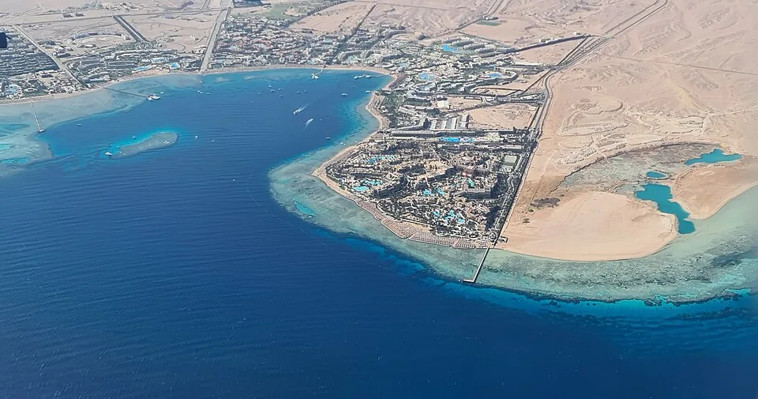
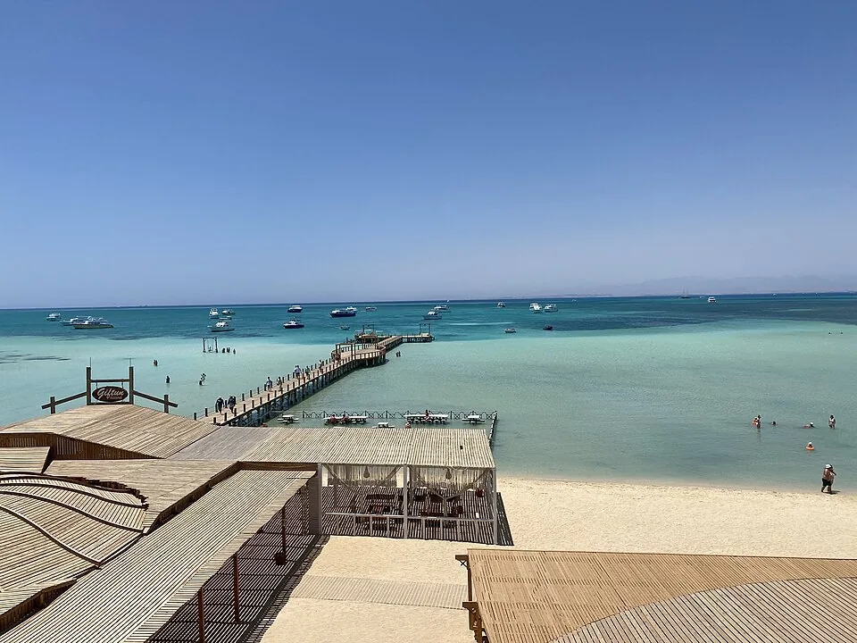
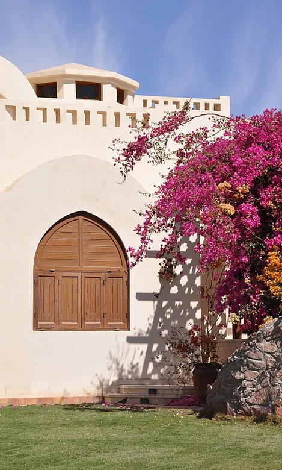
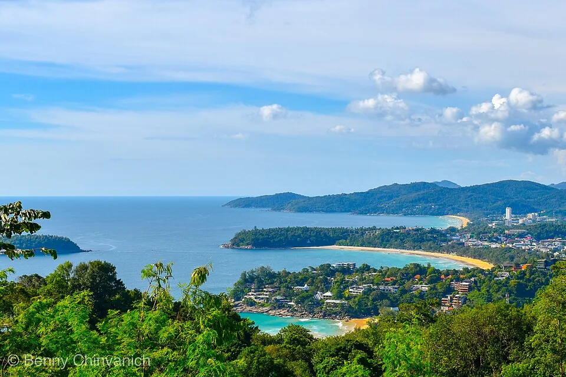
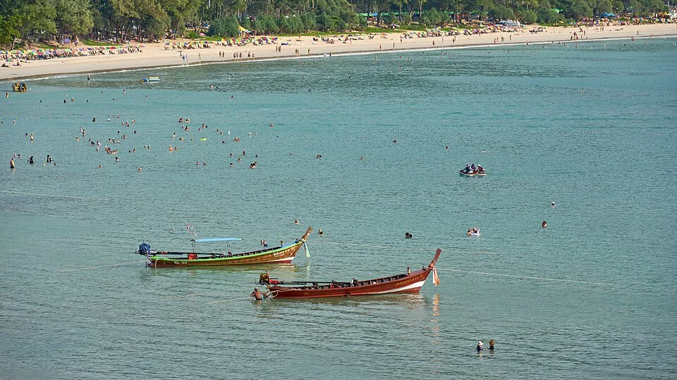
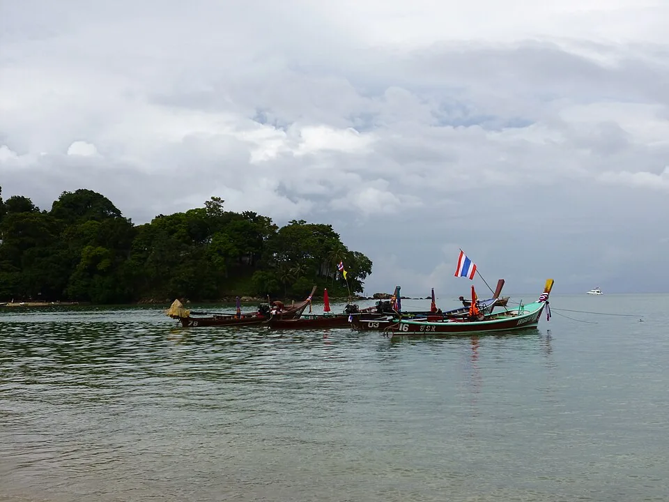
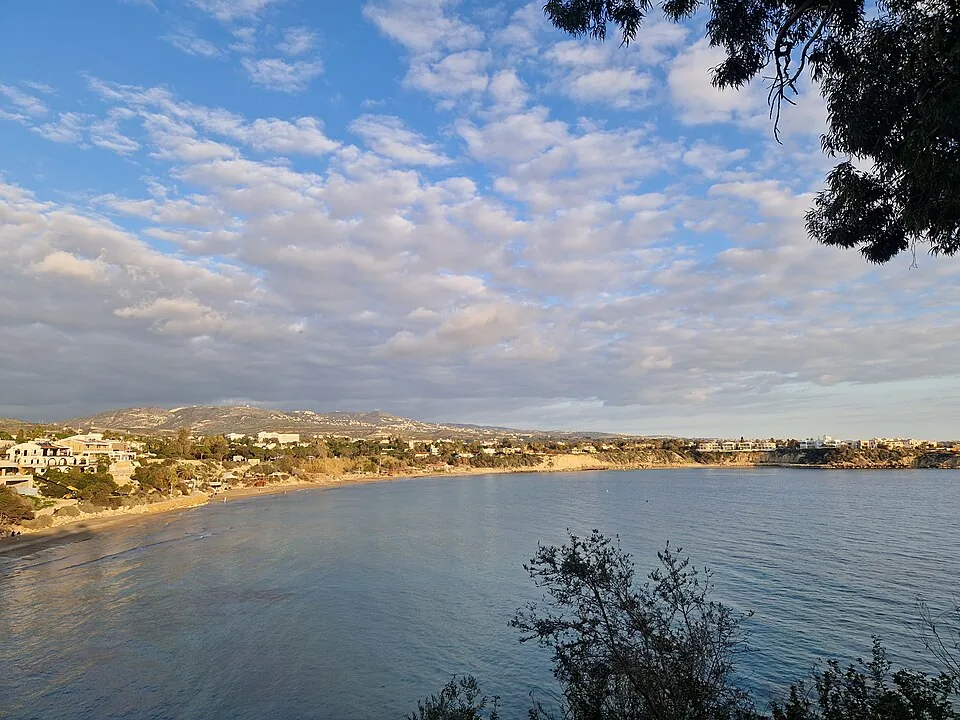
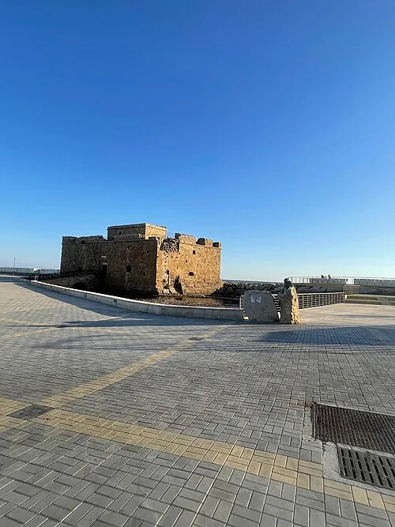
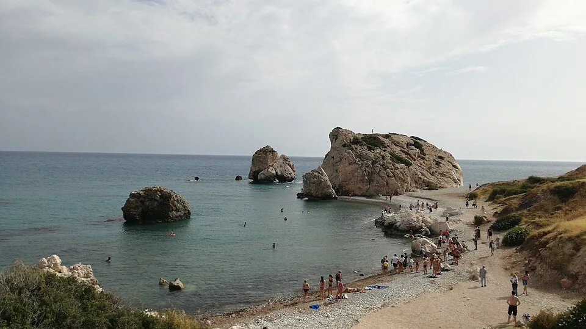

Красное море и курорт Макади-Бей, вид с воздуха
Xxlstier · CC BY 4.0
Оригинал на Wikimedia CommonsФотографии показывают направления и их окрестности. Изображения уменьшены и перекодированы в WebP для загрузки на мобильных устройствах. Для каждого файла действует указанная лицензия исходника. Демо-отели, их территории и предложения смоделированы.

Xxlstier · CC BY 4.0
Оригинал на Wikimedia Commons
Mahmoudxx1 · CC BY-SA 4.0
Оригинал на Wikimedia Commons
Marc Ryckaert · CC BY 3.0
Оригинал на Wikimedia Commons
Bennypc · CC BY-SA 4.0
Оригинал на Wikimedia Commons
Radek Kucharski · CC BY 2.0
Оригинал на Wikimedia Commons
Arnaud-Victor Monteux · CC BY-SA 4.0
Оригинал на Wikimedia Commons
Gerda Arendt · CC0 1.0
Оригинал на Wikimedia Commons
Mriana Agbaria · CC BY-SA 4.0
Оригинал на Wikimedia Commons
Viaggiamocela · CC BY-SA 4.0
Оригинал на Wikimedia Commons